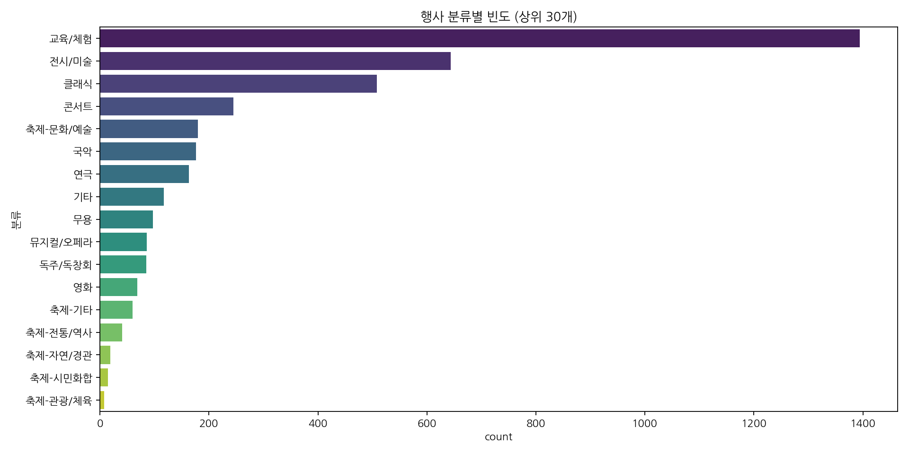
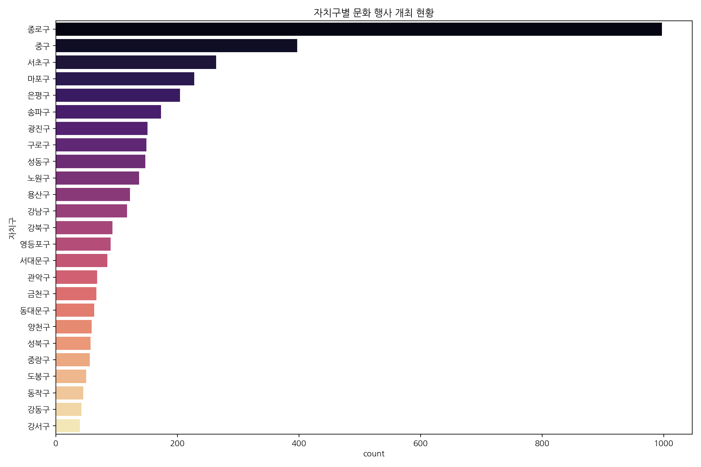
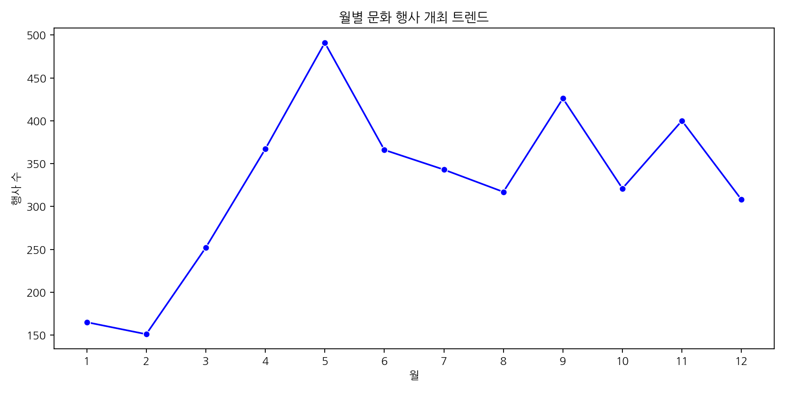
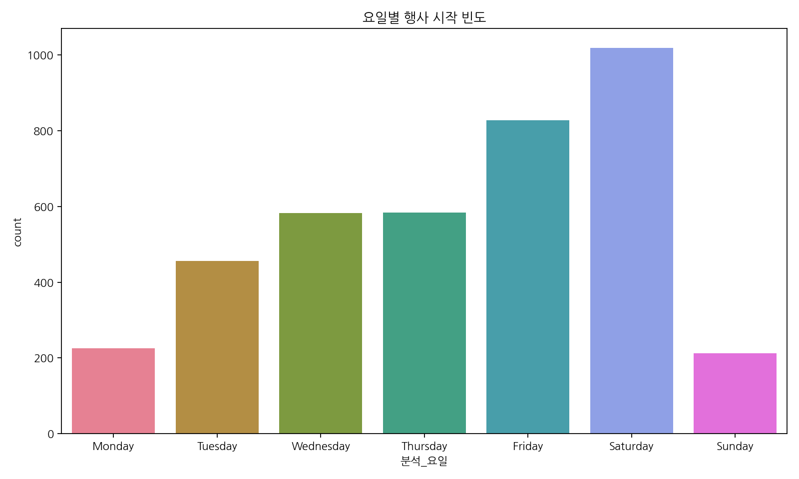
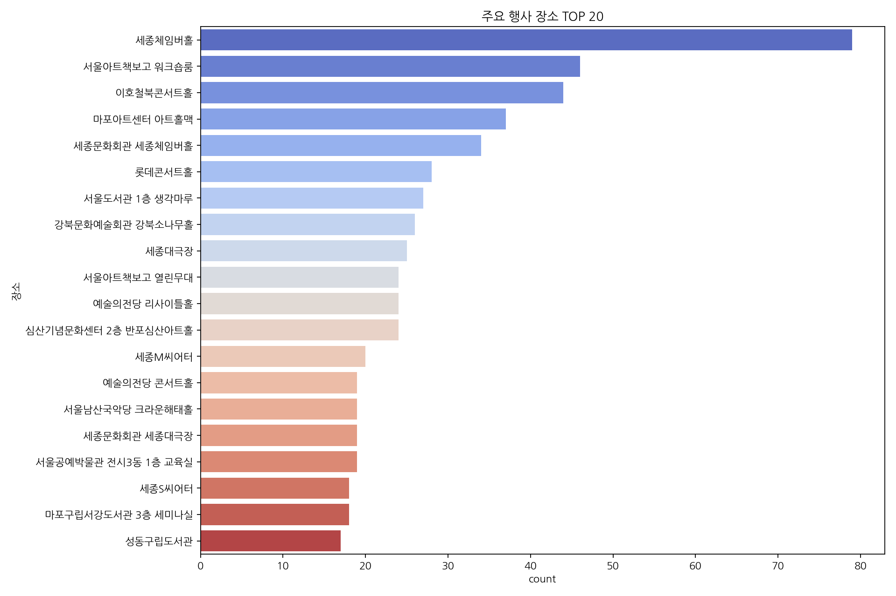
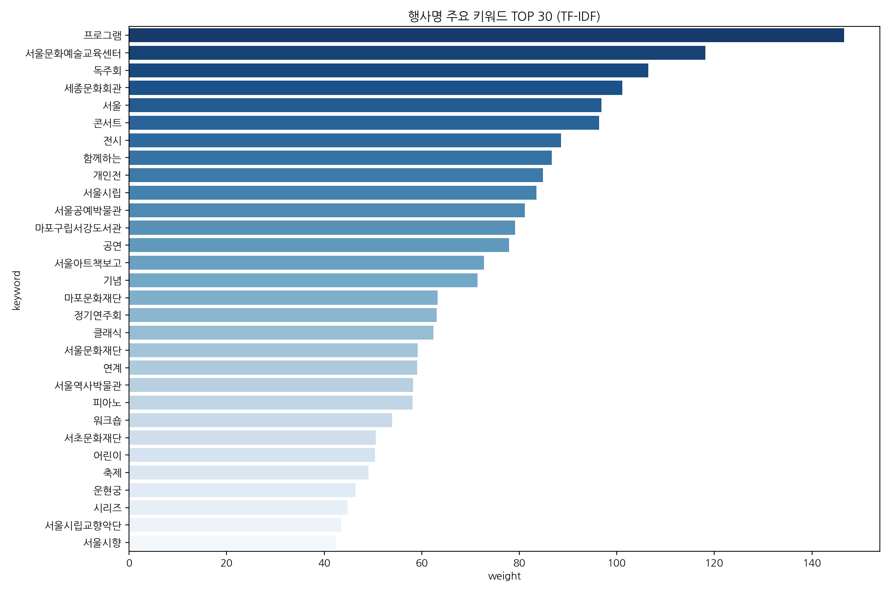

행사 분류별 빈도
교육/체험, 전시, 클래식이 상위권을 차지하며 다양한 데이트 테마 활용이 가능합니다.
서울 문화행사 데이터 기반 데이트 장소 추천 관리 대시보드
3,907
종로구
교육/체험
1,019

교육/체험, 전시, 클래식이 상위권을 차지하며 다양한 데이트 테마 활용이 가능합니다.

종로구, 중구, 서초구 순으로 문화 인프라가 집중되어 있어 초기 추천 지역으로 적합합니다.

5월과 9월~11월 사이 가을 시즌에 행사가 집중되어 시즌별 마케팅이 유효합니다.

금요일과 토요일에 행사가 집중되어 있어 주말 데이트 코스 구성에 유리합니다.

세종체임버홀, 서울아트책보고 등 반복적으로 개최되는 거점 장소를 집중 관리합니다.

콘서트, 전시, 클래식 등 핵심 키워드를 통해 데이트 태그를 자동 생성할 수 있습니다.
앱 출시 초기, 사용자 코스 데이터 부족 문제를 공공데이터 기반 큐레이션으로 해결합니다.
종로/중구 등 행사가 밀집된 지역을 중심으로 '실패 없는 정석 코스'를 먼저 등록하여 초기 사용자 체류 시간을 확보합니다.
EDA로 도출된 '전시', '체험', '무료' 등의 키워드를 앱 필터에 우선 배치하여 사용자가 원하는 테마를 빠르게 찾게 합니다.
금/토 시작 행사가 압도적이므로, 목요일 오후 '주말 데이트 치트키' 푸시 알림을 통해 앱 접속을 유도하는 전략이 유효합니다.
단순 정보 제공이 아닌, 운영자의 '추천 이유'를 앱 가이드 텍스트로 활용해 Deco만의 전문적이고 친절한 톤앤매너를 구축합니다.
아래 선별된 데이터는 Deco 앱의 홈 화면 추천 코스 및 상세 페이지의 원천 데이터로 활용됩니다.
추천 후보 0개
앱 등록 후보 0개
| 등록 | 행사명 (Deco 홈 노출) | 지역 (지도 연동) | 장소 | 분류 | 추천 태그 (앱 필터) | 추천 점수 | 일정 | 상세 | 추천 이유 (상세 설명 활용) |
|---|
Admin의 '추천 후보 TOP 5' 데이터는 Deco 앱 홈 화면의 '오늘의 추천 코스' 섹션으로 즉시 공급됩니다.
Admin에서 정의한 '실내', '야간', '가성비' 등의 태그는 앱 내 검색 필터 및 태그 클라우드 시스템과 동기화됩니다.
공공데이터의 위경도 좌표 정보를 활용하여, 앱의 지도 화면에서 장소 간 이동 경로를 최적화하여 보여줍니다.
운영자가 작성한 '추천 이유'는 앱 코스 상세 페이지에서 사용자에게 신뢰도 높은 가이드 텍스트로 노출됩니다.